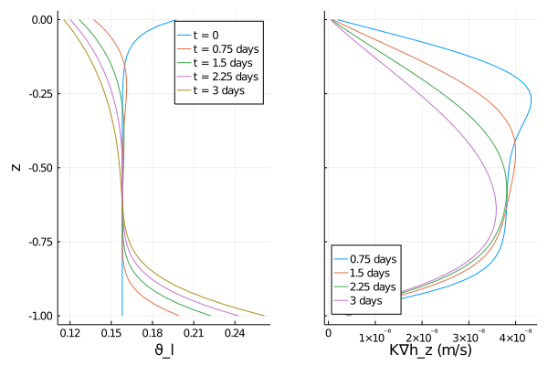
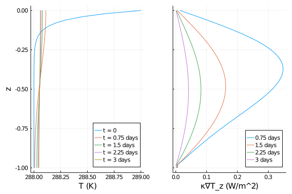

to do - add in diffusive courant??
Coupled heat and water equations tending towards equilibrium
Other tutorials, such as the soil heat tutorial and LINK WATER TUTORIAL HERE demonstrate how to solve the heat equation or Richard's equation without considering full interactions between the two. As an example, the user could prescribe a fixed function of space and time for the liquid water content, and use that to drive the heat equation, but without allowing the water content to dynamically evolve according to Richard's equation and without allowing the changing temperature of the soil to affect the water evolution.
Here we show how to solve the interacting heat and water equations, in sand. This allows us to capture behavior that is not present in the decoupled equations; for example, the diffusion of water also leads to an additional diffusion of heat. The equations are: $\frac{∂ ρe_int}{∂ t} = ∇ ⋅ (κ(θ_l, θ_i; ν, ...) ∇T) + ρe_int_liq \times ∇ ⋅ (K (T,θ_l, θ_i; ν, ...) h( ϑ_l, z; ν, ...))$ $\frac{ ∂ ϑ_l}{∂ t} = ∇ ⋅ (K (T,θ_l, θ_i; ν, ...) h( ϑ_l, z; ν, ...)).$
Here, ρe_int is the volumetric internal energy, ρe_int_liq is the liquid water volumetric internal energy, κ is the thermal conductivity, K is the hydraulic conductivity, T is the soil temperature, h is the hydraulic heat, and ϑ_l is the augmented liquid fraction. The conductivities are dependent on the volumetric ice fraction, θ_i, as well. The symbols ν, ... denote various parameters related to soil type, such as the van Genuchten parameters, the porosity, and the soil composition parameters, indicating that the equation is different for different soil types.
In steady state equilibrium, the LHS of these equations tends to zero. This tutorial uses a closed-box set-up, with zero heat and water fluxes at the boundaries. In the resulting equilibrium state, Richard's equation implies that ∂h/∂z = 0: the water settles into a vertical profile in which the resulting pressure balances gravity. In the heat equation, equilibrium implies a constant temperature across the domain. We verify that the system is approaching this equilibrium, and we also sketch out an analytic calculation for the final temperature in equilibrium.
Import necessary modules
External (non - CliMA) modules
using MPI
using OrderedCollections
using StaticArrays
using Statistics
using PlotsCliMA Parameters
using CLIMAParameters
using CLIMAParameters.Planet: ρ_cloud_liq, ρ_cloud_ice, cp_l, cp_i, T_0, LH_f0
using CLIMAParameters.Atmos.Microphysics: K_thermClimateMachine modules
using ClimateMachine
using ClimateMachine.Land
using ClimateMachine.Land.SoilWaterParameterizations
using ClimateMachine.Land.SoilHeatParameterizations
using ClimateMachine.Mesh.Topologies
using ClimateMachine.Mesh.Grids
using ClimateMachine.Diagnostics
using ClimateMachine.ConfigTypes
using ClimateMachine.DGMethods
using ClimateMachine.DGMethods.NumericalFluxes
using ClimateMachine.DGMethods: BalanceLaw, LocalGeometry
using ClimateMachine.MPIStateArrays
using ClimateMachine.GenericCallbacks
using ClimateMachine.ODESolvers
using ClimateMachine.VariableTemplates
using ClimateMachine.SingleStackUtils
using ClimateMachine.BalanceLaws:
BalanceLaw, Prognostic, Auxiliary, Gradient, GradientFlux, vars_statePreliminary set-up
Get the parameter set, which holds constants used across CliMA models.
struct EarthParameterSet <: AbstractEarthParameterSet end
const param_set = EarthParameterSet()Main.ex-equilibrium_test.EarthParameterSet()
Initialize and pick a floating point precision.
ClimateMachine.init()
FT = Float64
const clima_dir = dirname(dirname(pathof(ClimateMachine)));Load a function that will interpolate output of simulation
include(joinpath(
clima_dir,
"tutorials",
"Land",
"Soil",
"interpolation_helper.jl",
));Set soil parameters to be consistent with sand. Please see e.g. the soil heat tutorial for other soil type parameters, or [2].
The porosity:
porosity = FT(0.395)0.395
Soil solids are the components of soil besides water, ice, gases, and air. We specify the soil component fractions, relative to all soil solids. These should sum to unity; they do not account for pore space.
ν_ss_quartz = FT(0.92)
ν_ss_minerals = FT(0.08)
ν_ss_om = FT(0.0)
ν_ss_gravel = FT(0.0)0.0
Other parameters include the hydraulic conductivity at saturation, the specific storage, and the van Genuchten parameters for sand. We recommend Chapter 8 of [1] for finding parameters for other soil types.
Ksat = FT(4.42 / 3600 / 100) # m/s
S_s = FT(1e-3) #inverse meters
vg_n = FT(1.89)
vg_α = FT(7.5) # inverse meters7.5
Other constants needed:
κ_quartz = FT(7.7) # W/m/K
κ_minerals = FT(2.5) # W/m/K
κ_om = FT(0.25) # W/m/K
κ_liq = FT(0.57) # W/m/K
κ_ice = FT(2.29) # W/m/K2.29
The thermal conductivity of air is a constant parameter used across ClimateMachine, so we will get it from that parameter set.
κ_air = FT(K_therm(param_set)) # W/m/K0.024
The particle density of organic material-free soil is equal to the particle density of quartz and other minerals [3]:
ρp = FT(2700) # kg/m^32700.0
We calculate the thermal conductivities for the solid material, for dry soil, and for saturated soil. These functions are taken from Balland and Arp (2005) [3].
κ_solid =
k_solid(ν_ss_om, ν_ss_quartz, ν_ss_minerals, κ_quartz, κ_minerals, κ_om)
κ_dry = k_dry(κ_solid, porosity, κ_air, ρp)
κ_sat_frozen = ksat_frozen(κ_solid, porosity, κ_ice)
κ_sat_unfrozen = ksat_unfrozen(κ_solid, porosity, κ_liq)2.6076638236870164
Next, we calculate the volumetric heat capacity of dry soil. Dry soil refers to the soil that has no water content.
ρc_ds = FT((1 - porosity) * 1.926e06) # J/m^3/K1.16523e6
We collect the majority of the parameters needed for modeling heat and water flow in soil in soil_param_functions. The van Genuchten parameters are stored in the water model, in an object called hydraulics, however.
soil_param_functions = SoilParamFunctions{FT}(
Ksat = Ksat,
S_s = S_s,
porosity = porosity,
ν_ss_gravel = ν_ss_gravel,
ν_ss_om = ν_ss_om,
ν_ss_quartz = ν_ss_quartz,
ρc_ds = ρc_ds,
κ_dry = κ_dry,
κ_sat_unfrozen = κ_sat_unfrozen,
κ_sat_frozen = κ_sat_frozen,
a = 0.24, # used in the Kersten number [2]
b = 18.1, # used in the Kersten number [2]
)ClimateMachine.Land.SoilParamFunctions{Float64}(0.395, 1.2277777777777777e-5, 0.001, 0.0, 0.0, 0.92, 1.16523e6, 0.5505750588978987, 2.6076638236870164, 4.516645961171465, 0.24, 18.1)Initial and Boundary conditions
Please note that Dirichlet boundary conditions are on ϑ_l and T, while Neumann boundary conditions are on -κ∇T and -K∇h. For Neumann conditions, the user supplies a scalar, which is multiplied by ẑ within the code. Boundary conditions can be functions of time and space. Initial conditions are only functions of space. aux holds the spatial coordinates x, y, and z, but these integrations are effectively only vertical, so we only use z.
The initial water profile:
function ϑ_l0(aux)
FT = eltype(aux)
zmax = FT(0)
zmin = FT(-1)
theta_max = FT(porosity * 0.5)
theta_min = FT(porosity * 0.4)
c = FT(20.0)
z = aux.z
output =
theta_min +
(theta_max - theta_min) * exp(-(z - zmax) / (zmin - zmax) * c)
return output
endϑ_l0 (generic function with 1 method)
Water boundary conditions:
surface_water_flux = (aux, t) -> eltype(aux)(0.0)
bottom_water_flux = (aux, t) -> eltype(aux)(0.0)
surface_water_state = nothing
bottom_water_state = nothingThe initial temperature profile:
function T_init(aux)
FT = eltype(aux)
zmax = FT(0)
zmin = FT(-1)
T_max = FT(289.0)
T_min = FT(288.0)
c = FT(20.0)
z = aux.z
output = T_min + (T_max - T_min) * exp(-(z - zmax) / (zmin - zmax) * c)
return output
endT_init (generic function with 1 method)
As we are not including the equations for phase changes in this tutorial, we chose temperatures that are above the freezing point of water.
The boundary conditions for the heat equation:
surface_heat_flux = (aux, t) -> eltype(aux)(0.0)
bottom_heat_flux = (aux, t) -> eltype(aux)(0.0)
surface_heat_state = nothing
bottom_heat_state = nothingNext, we define the required init_soil! function, which takes the user specified functions of space for T and ϑ_l and initializes the state variables of volumetric internal energy and augmented liquid fraction. This requires a conversion from T to ρe_int.
function init_soil!(land, state, aux, coordinates, time)
myFT = eltype(state)
ϑ_l = myFT(land.soil.water.initialϑ_l(aux))
θ_i = myFT(land.soil.water.initialθ_i(aux))
state.soil.water.ϑ_l = ϑ_l
state.soil.water.θ_i = θ_i
θ_l = volumetric_liquid_fraction(ϑ_l, land.soil.param_functions.porosity)
ρc_ds = land.soil.param_functions.ρc_ds
ρc_s = volumetric_heat_capacity(θ_l, θ_i, ρc_ds, land.param_set)
state.soil.heat.ρe_int = volumetric_internal_energy(
θ_i,
ρc_s,
land.soil.heat.initialT(aux),
land.param_set,
)
endinit_soil! (generic function with 1 method)
Create the soil model structure
First, for water:
soil_water_model = SoilWaterModel(
FT;
viscosity_factor = TemperatureDependentViscosity{FT}(),
moisture_factor = MoistureDependent{FT}(),
hydraulics = vanGenuchten{FT}(α = vg_α, n = vg_n),
initialϑ_l = ϑ_l0,
dirichlet_bc = Dirichlet(
surface_state = surface_water_state,
bottom_state = bottom_water_state,
),
neumann_bc = Neumann(
surface_flux = surface_water_flux,
bottom_flux = bottom_water_flux,
),
)ClimateMachine.Land.SoilWaterModel{Float64,ClimateMachine.Land.SoilWaterParameterizations.NoImpedance{Float64},ClimateMachine.Land.SoilWaterParameterizations.TemperatureDependentViscosity{Float64},ClimateMachine.Land.SoilWaterParameterizations.MoistureDependent{Float64},ClimateMachine.Land.SoilWaterParameterizations.vanGenuchten{Float64},typeof(Main.ex-equilibrium_test.ϑ_l0),ClimateMachine.Land.var"#18#22",ClimateMachine.Land.Dirichlet{Nothing,Nothing},ClimateMachine.Land.Neumann{Main.ex-equilibrium_test.var"#1#2",Main.ex-equilibrium_test.var"#3#4"}}(ClimateMachine.Land.SoilWaterParameterizations.NoImpedance{Float64}(), ClimateMachine.Land.SoilWaterParameterizations.TemperatureDependentViscosity{Float64}(0.0264, 288.0), ClimateMachine.Land.SoilWaterParameterizations.MoistureDependent{Float64}(), ClimateMachine.Land.SoilWaterParameterizations.vanGenuchten{Float64}(1.89, 7.5, 0.4708994708994708), Main.ex-equilibrium_test.ϑ_l0, ClimateMachine.Land.var"#18#22"(), ClimateMachine.Land.Dirichlet{Nothing,Nothing}(nothing, nothing), ClimateMachine.Land.Neumann{Main.ex-equilibrium_test.var"#1#2",Main.ex-equilibrium_test.var"#3#4"}(Main.ex-equilibrium_test.var"#1#2"(), Main.ex-equilibrium_test.var"#3#4"()))Note that the viscosity of water depends on temperature. We account for the effect that has on the hydraulic conductivity by specifying viscosity_factor = TemperatureDependentViscosity{FT}(). The default, if no viscosity_factor keyword argument is supplied, is to not include the effect of T on viscosity.
Repeat for heat:
soil_heat_model = SoilHeatModel(
FT;
initialT = T_init,
dirichlet_bc = Dirichlet(
surface_state = surface_heat_state,
bottom_state = bottom_heat_state,
),
neumann_bc = Neumann(
surface_flux = surface_heat_flux,
bottom_flux = bottom_heat_flux,
),
)ClimateMachine.Land.SoilHeatModel{Float64,typeof(Main.ex-equilibrium_test.T_init),ClimateMachine.Land.Dirichlet{Nothing,Nothing},ClimateMachine.Land.Neumann{Main.ex-equilibrium_test.var"#5#6",Main.ex-equilibrium_test.var"#7#8"}}(Main.ex-equilibrium_test.T_init, ClimateMachine.Land.Dirichlet{Nothing,Nothing}(nothing, nothing), ClimateMachine.Land.Neumann{Main.ex-equilibrium_test.var"#5#6",Main.ex-equilibrium_test.var"#7#8"}(Main.ex-equilibrium_test.var"#5#6"(), Main.ex-equilibrium_test.var"#7#8"()))Combine into a single soil model
m_soil = SoilModel(soil_param_functions, soil_water_model, soil_heat_model)ClimateMachine.Land.SoilModel{ClimateMachine.Land.SoilParamFunctions{Float64},ClimateMachine.Land.SoilWaterModel{Float64,ClimateMachine.Land.SoilWaterParameterizations.NoImpedance{Float64},ClimateMachine.Land.SoilWaterParameterizations.TemperatureDependentViscosity{Float64},ClimateMachine.Land.SoilWaterParameterizations.MoistureDependent{Float64},ClimateMachine.Land.SoilWaterParameterizations.vanGenuchten{Float64},typeof(Main.ex-equilibrium_test.ϑ_l0),ClimateMachine.Land.var"#18#22",ClimateMachine.Land.Dirichlet{Nothing,Nothing},ClimateMachine.Land.Neumann{Main.ex-equilibrium_test.var"#1#2",Main.ex-equilibrium_test.var"#3#4"}},ClimateMachine.Land.SoilHeatModel{Float64,typeof(Main.ex-equilibrium_test.T_init),ClimateMachine.Land.Dirichlet{Nothing,Nothing},ClimateMachine.Land.Neumann{Main.ex-equilibrium_test.var"#5#6",Main.ex-equilibrium_test.var"#7#8"}}}(ClimateMachine.Land.SoilParamFunctions{Float64}(0.395, 1.2277777777777777e-5, 0.001, 0.0, 0.0, 0.92, 1.16523e6, 0.5505750588978987, 2.6076638236870164, 4.516645961171465, 0.24, 18.1), ClimateMachine.Land.SoilWaterModel{Float64,ClimateMachine.Land.SoilWaterParameterizations.NoImpedance{Float64},ClimateMachine.Land.SoilWaterParameterizations.TemperatureDependentViscosity{Float64},ClimateMachine.Land.SoilWaterParameterizations.MoistureDependent{Float64},ClimateMachine.Land.SoilWaterParameterizations.vanGenuchten{Float64},typeof(Main.ex-equilibrium_test.ϑ_l0),ClimateMachine.Land.var"#18#22",ClimateMachine.Land.Dirichlet{Nothing,Nothing},ClimateMachine.Land.Neumann{Main.ex-equilibrium_test.var"#1#2",Main.ex-equilibrium_test.var"#3#4"}}(ClimateMachine.Land.SoilWaterParameterizations.NoImpedance{Float64}(), ClimateMachine.Land.SoilWaterParameterizations.TemperatureDependentViscosity{Float64}(0.0264, 288.0), ClimateMachine.Land.SoilWaterParameterizations.MoistureDependent{Float64}(), ClimateMachine.Land.SoilWaterParameterizations.vanGenuchten{Float64}(1.89, 7.5, 0.4708994708994708), Main.ex-equilibrium_test.ϑ_l0, ClimateMachine.Land.var"#18#22"(), ClimateMachine.Land.Dirichlet{Nothing,Nothing}(nothing, nothing), ClimateMachine.Land.Neumann{Main.ex-equilibrium_test.var"#1#2",Main.ex-equilibrium_test.var"#3#4"}(Main.ex-equilibrium_test.var"#1#2"(), Main.ex-equilibrium_test.var"#3#4"())), ClimateMachine.Land.SoilHeatModel{Float64,typeof(Main.ex-equilibrium_test.T_init),ClimateMachine.Land.Dirichlet{Nothing,Nothing},ClimateMachine.Land.Neumann{Main.ex-equilibrium_test.var"#5#6",Main.ex-equilibrium_test.var"#7#8"}}(Main.ex-equilibrium_test.T_init, ClimateMachine.Land.Dirichlet{Nothing,Nothing}(nothing, nothing), ClimateMachine.Land.Neumann{Main.ex-equilibrium_test.var"#5#6",Main.ex-equilibrium_test.var"#7#8"}(Main.ex-equilibrium_test.var"#5#6"(), Main.ex-equilibrium_test.var"#7#8"())))We aren't using any sources or sinks in the equations here.
sources = ()()
Create the LandModel without other components (canopy, carbon, etc).
m = LandModel(
param_set,
m_soil;
source = sources,
init_state_prognostic = init_soil!,
)ClimateMachine.Land.LandModel{Main.ex-equilibrium_test.EarthParameterSet,ClimateMachine.Land.SoilModel{ClimateMachine.Land.SoilParamFunctions{Float64},ClimateMachine.Land.SoilWaterModel{Float64,ClimateMachine.Land.SoilWaterParameterizations.NoImpedance{Float64},ClimateMachine.Land.SoilWaterParameterizations.TemperatureDependentViscosity{Float64},ClimateMachine.Land.SoilWaterParameterizations.MoistureDependent{Float64},ClimateMachine.Land.SoilWaterParameterizations.vanGenuchten{Float64},typeof(Main.ex-equilibrium_test.ϑ_l0),ClimateMachine.Land.var"#18#22",ClimateMachine.Land.Dirichlet{Nothing,Nothing},ClimateMachine.Land.Neumann{Main.ex-equilibrium_test.var"#1#2",Main.ex-equilibrium_test.var"#3#4"}},ClimateMachine.Land.SoilHeatModel{Float64,typeof(Main.ex-equilibrium_test.T_init),ClimateMachine.Land.Dirichlet{Nothing,Nothing},ClimateMachine.Land.Neumann{Main.ex-equilibrium_test.var"#5#6",Main.ex-equilibrium_test.var"#7#8"}}},Tuple{},typeof(Main.ex-equilibrium_test.init_soil!)}(Main.ex-equilibrium_test.EarthParameterSet(), ClimateMachine.Land.SoilModel{ClimateMachine.Land.SoilParamFunctions{Float64},ClimateMachine.Land.SoilWaterModel{Float64,ClimateMachine.Land.SoilWaterParameterizations.NoImpedance{Float64},ClimateMachine.Land.SoilWaterParameterizations.TemperatureDependentViscosity{Float64},ClimateMachine.Land.SoilWaterParameterizations.MoistureDependent{Float64},ClimateMachine.Land.SoilWaterParameterizations.vanGenuchten{Float64},typeof(Main.ex-equilibrium_test.ϑ_l0),ClimateMachine.Land.var"#18#22",ClimateMachine.Land.Dirichlet{Nothing,Nothing},ClimateMachine.Land.Neumann{Main.ex-equilibrium_test.var"#1#2",Main.ex-equilibrium_test.var"#3#4"}},ClimateMachine.Land.SoilHeatModel{Float64,typeof(Main.ex-equilibrium_test.T_init),ClimateMachine.Land.Dirichlet{Nothing,Nothing},ClimateMachine.Land.Neumann{Main.ex-equilibrium_test.var"#5#6",Main.ex-equilibrium_test.var"#7#8"}}}(ClimateMachine.Land.SoilParamFunctions{Float64}(0.395, 1.2277777777777777e-5, 0.001, 0.0, 0.0, 0.92, 1.16523e6, 0.5505750588978987, 2.6076638236870164, 4.516645961171465, 0.24, 18.1), ClimateMachine.Land.SoilWaterModel{Float64,ClimateMachine.Land.SoilWaterParameterizations.NoImpedance{Float64},ClimateMachine.Land.SoilWaterParameterizations.TemperatureDependentViscosity{Float64},ClimateMachine.Land.SoilWaterParameterizations.MoistureDependent{Float64},ClimateMachine.Land.SoilWaterParameterizations.vanGenuchten{Float64},typeof(Main.ex-equilibrium_test.ϑ_l0),ClimateMachine.Land.var"#18#22",ClimateMachine.Land.Dirichlet{Nothing,Nothing},ClimateMachine.Land.Neumann{Main.ex-equilibrium_test.var"#1#2",Main.ex-equilibrium_test.var"#3#4"}}(ClimateMachine.Land.SoilWaterParameterizations.NoImpedance{Float64}(), ClimateMachine.Land.SoilWaterParameterizations.TemperatureDependentViscosity{Float64}(0.0264, 288.0), ClimateMachine.Land.SoilWaterParameterizations.MoistureDependent{Float64}(), ClimateMachine.Land.SoilWaterParameterizations.vanGenuchten{Float64}(1.89, 7.5, 0.4708994708994708), Main.ex-equilibrium_test.ϑ_l0, ClimateMachine.Land.var"#18#22"(), ClimateMachine.Land.Dirichlet{Nothing,Nothing}(nothing, nothing), ClimateMachine.Land.Neumann{Main.ex-equilibrium_test.var"#1#2",Main.ex-equilibrium_test.var"#3#4"}(Main.ex-equilibrium_test.var"#1#2"(), Main.ex-equilibrium_test.var"#3#4"())), ClimateMachine.Land.SoilHeatModel{Float64,typeof(Main.ex-equilibrium_test.T_init),ClimateMachine.Land.Dirichlet{Nothing,Nothing},ClimateMachine.Land.Neumann{Main.ex-equilibrium_test.var"#5#6",Main.ex-equilibrium_test.var"#7#8"}}(Main.ex-equilibrium_test.T_init, ClimateMachine.Land.Dirichlet{Nothing,Nothing}(nothing, nothing), ClimateMachine.Land.Neumann{Main.ex-equilibrium_test.var"#5#6",Main.ex-equilibrium_test.var"#7#8"}(Main.ex-equilibrium_test.var"#5#6"(), Main.ex-equilibrium_test.var"#7#8"()))), (), Main.ex-equilibrium_test.init_soil!)Specify the numerical details
Choose a resolution, domain boundaries, integration time, timestep, and ODE solver.
N_poly = 1
nelem_vert = 50
zmin = FT(-1)
zmax = FT(0)
driver_config = ClimateMachine.SingleStackConfiguration(
"LandModel",
N_poly,
nelem_vert,
zmax,
param_set,
m;
zmin = zmin,
numerical_flux_first_order = CentralNumericalFluxFirstOrder(),
)
t0 = FT(0)
timeend = FT(60 * 60 * 72)
dt = FT(30.0)
solver_config =
ClimateMachine.SolverConfiguration(t0, timeend, driver_config, ode_dt = dt)ClimateMachine.SolverConfiguration{Float64}("LandModel", MPI.Comm(1140850688), Main.ex-equilibrium_test.EarthParameterSet(), ClimateMachine.DGMethods.DGModel{ClimateMachine.Land.LandModel{Main.ex-equilibrium_test.EarthParameterSet,ClimateMachine.Land.SoilModel{ClimateMachine.Land.SoilParamFunctions{Float64},ClimateMachine.Land.SoilWaterModel{Float64,ClimateMachine.Land.SoilWaterParameterizations.NoImpedance{Float64},ClimateMachine.Land.SoilWaterParameterizations.TemperatureDependentViscosity{Float64},ClimateMachine.Land.SoilWaterParameterizations.MoistureDependent{Float64},ClimateMachine.Land.SoilWaterParameterizations.vanGenuchten{Float64},typeof(Main.ex-equilibrium_test.ϑ_l0),ClimateMachine.Land.var"#18#22",ClimateMachine.Land.Dirichlet{Nothing,Nothing},ClimateMachine.Land.Neumann{Main.ex-equilibrium_test.var"#1#2",Main.ex-equilibrium_test.var"#3#4"}},ClimateMachine.Land.SoilHeatModel{Float64,typeof(Main.ex-equilibrium_test.T_init),ClimateMachine.Land.Dirichlet{Nothing,Nothing},ClimateMachine.Land.Neumann{Main.ex-equilibrium_test.var"#5#6",Main.ex-equilibrium_test.var"#7#8"}}},Tuple{},typeof(Main.ex-equilibrium_test.init_soil!)},ClimateMachine.Mesh.Grids.DiscontinuousSpectralElementGrid{Float64,3,1,8,Array,Array{Float64,1},Array{Float64,2},Array{Float64,3},Array{Float64,4},Array{Int64,1},Array{Int64,2},Array{Int64,3},ClimateMachine.Mesh.Topologies.StackedBrickTopology{3,Float64}},ClimateMachine.DGMethods.NumericalFluxes.CentralNumericalFluxFirstOrder,ClimateMachine.DGMethods.NumericalFluxes.CentralNumericalFluxSecondOrder,ClimateMachine.DGMethods.NumericalFluxes.CentralNumericalFluxGradient,ClimateMachine.MPIStateArrays.MPIStateArray{Float64,NamedTuple{(:z, :soil),Tuple{Float64,NamedTuple{(:water, :heat),Tuple{NamedTuple{(:h, :K),Tuple{Float64,Float64}},NamedTuple{(:T,),Tuple{Float64}}}}}},Array{Float64,3},Array{Int64,1},SubArray{Float64,3,Array{Float64,3},Tuple{Base.Slice{Base.OneTo{Int64}},Base.Slice{Base.OneTo{Int64}},UnitRange{Int64}},true},ClimateMachine.MPIStateArrays.CMBuffers.CMBuffer{Float64,Array{Float64,2},Nothing}},ClimateMachine.MPIStateArrays.MPIStateArray{Float64,NamedTuple{(:soil,),Tuple{NamedTuple{(:water, :heat),Tuple{NamedTuple{(:K∇h,),Tuple{StaticArrays.SArray{Tuple{3},Float64,1,3}}},NamedTuple{(:κ∇T,),Tuple{StaticArrays.SArray{Tuple{3},Float64,1,3}}}}}}},Array{Float64,3},Array{Int64,1},SubArray{Float64,3,Array{Float64,3},Tuple{Base.Slice{Base.OneTo{Int64}},Base.Slice{Base.OneTo{Int64}},UnitRange{Int64}},true},ClimateMachine.MPIStateArrays.CMBuffers.CMBuffer{Float64,Array{Float64,2},Nothing}},Tuple{ClimateMachine.MPIStateArrays.MPIStateArray{Float64,NamedTuple{(),Tuple{}},Array{Float64,3},Array{Int64,1},SubArray{Float64,3,Array{Float64,3},Tuple{Base.Slice{Base.OneTo{Int64}},Base.Slice{Base.OneTo{Int64}},UnitRange{Int64}},true},ClimateMachine.MPIStateArrays.CMBuffers.CMBuffer{Float64,Array{Float64,2},Nothing}},ClimateMachine.MPIStateArrays.MPIStateArray{Float64,NamedTuple{(),Tuple{}},Array{Float64,3},Array{Int64,1},SubArray{Float64,3,Array{Float64,3},Tuple{Base.Slice{Base.OneTo{Int64}},Base.Slice{Base.OneTo{Int64}},UnitRange{Int64}},true},ClimateMachine.MPIStateArrays.CMBuffers.CMBuffer{Float64,Array{Float64,2},Nothing}}},ClimateMachine.Mesh.Grids.VerticalDirection,ClimateMachine.Mesh.Grids.VerticalDirection,Nothing}(ClimateMachine.Land.LandModel{Main.ex-equilibrium_test.EarthParameterSet,ClimateMachine.Land.SoilModel{ClimateMachine.Land.SoilParamFunctions{Float64},ClimateMachine.Land.SoilWaterModel{Float64,ClimateMachine.Land.SoilWaterParameterizations.NoImpedance{Float64},ClimateMachine.Land.SoilWaterParameterizations.TemperatureDependentViscosity{Float64},ClimateMachine.Land.SoilWaterParameterizations.MoistureDependent{Float64},ClimateMachine.Land.SoilWaterParameterizations.vanGenuchten{Float64},typeof(Main.ex-equilibrium_test.ϑ_l0),ClimateMachine.Land.var"#18#22",ClimateMachine.Land.Dirichlet{Nothing,Nothing},ClimateMachine.Land.Neumann{Main.ex-equilibrium_test.var"#1#2",Main.ex-equilibrium_test.var"#3#4"}},ClimateMachine.Land.SoilHeatModel{Float64,typeof(Main.ex-equilibrium_test.T_init),ClimateMachine.Land.Dirichlet{Nothing,Nothing},ClimateMachine.Land.Neumann{Main.ex-equilibrium_test.var"#5#6",Main.ex-equilibrium_test.var"#7#8"}}},Tuple{},typeof(Main.ex-equilibrium_test.init_soil!)}(Main.ex-equilibrium_test.EarthParameterSet(), ClimateMachine.Land.SoilModel{ClimateMachine.Land.SoilParamFunctions{Float64},ClimateMachine.Land.SoilWaterModel{Float64,ClimateMachine.Land.SoilWaterParameterizations.NoImpedance{Float64},ClimateMachine.Land.SoilWaterParameterizations.TemperatureDependentViscosity{Float64},ClimateMachine.Land.SoilWaterParameterizations.MoistureDependent{Float64},ClimateMachine.Land.SoilWaterParameterizations.vanGenuchten{Float64},typeof(Main.ex-equilibrium_test.ϑ_l0),ClimateMachine.Land.var"#18#22",ClimateMachine.Land.Dirichlet{Nothing,Nothing},ClimateMachine.Land.Neumann{Main.ex-equilibrium_test.var"#1#2",Main.ex-equilibrium_test.var"#3#4"}},ClimateMachine.Land.SoilHeatModel{Float64,typeof(Main.ex-equilibrium_test.T_init),ClimateMachine.Land.Dirichlet{Nothing,Nothing},ClimateMachine.Land.Neumann{Main.ex-equilibrium_test.var"#5#6",Main.ex-equilibrium_test.var"#7#8"}}}(ClimateMachine.Land.SoilParamFunctions{Float64}(0.395, 1.2277777777777777e-5, 0.001, 0.0, 0.0, 0.92, 1.16523e6, 0.5505750588978987, 2.6076638236870164, 4.516645961171465, 0.24, 18.1), ClimateMachine.Land.SoilWaterModel{Float64,ClimateMachine.Land.SoilWaterParameterizations.NoImpedance{Float64},ClimateMachine.Land.SoilWaterParameterizations.TemperatureDependentViscosity{Float64},ClimateMachine.Land.SoilWaterParameterizations.MoistureDependent{Float64},ClimateMachine.Land.SoilWaterParameterizations.vanGenuchten{Float64},typeof(Main.ex-equilibrium_test.ϑ_l0),ClimateMachine.Land.var"#18#22",ClimateMachine.Land.Dirichlet{Nothing,Nothing},ClimateMachine.Land.Neumann{Main.ex-equilibrium_test.var"#1#2",Main.ex-equilibrium_test.var"#3#4"}}(ClimateMachine.Land.SoilWaterParameterizations.NoImpedance{Float64}(), ClimateMachine.Land.SoilWaterParameterizations.TemperatureDependentViscosity{Float64}(0.0264, 288.0), ClimateMachine.Land.SoilWaterParameterizations.MoistureDependent{Float64}(), ClimateMachine.Land.SoilWaterParameterizations.vanGenuchten{Float64}(1.89, 7.5, 0.4708994708994708), Main.ex-equilibrium_test.ϑ_l0, ClimateMachine.Land.var"#18#22"(), ClimateMachine.Land.Dirichlet{Nothing,Nothing}(nothing, nothing), ClimateMachine.Land.Neumann{Main.ex-equilibrium_test.var"#1#2",Main.ex-equilibrium_test.var"#3#4"}(Main.ex-equilibrium_test.var"#1#2"(), Main.ex-equilibrium_test.var"#3#4"())), ClimateMachine.Land.SoilHeatModel{Float64,typeof(Main.ex-equilibrium_test.T_init),ClimateMachine.Land.Dirichlet{Nothing,Nothing},ClimateMachine.Land.Neumann{Main.ex-equilibrium_test.var"#5#6",Main.ex-equilibrium_test.var"#7#8"}}(Main.ex-equilibrium_test.T_init, ClimateMachine.Land.Dirichlet{Nothing,Nothing}(nothing, nothing), ClimateMachine.Land.Neumann{Main.ex-equilibrium_test.var"#5#6",Main.ex-equilibrium_test.var"#7#8"}(Main.ex-equilibrium_test.var"#5#6"(), Main.ex-equilibrium_test.var"#7#8"()))), (), Main.ex-equilibrium_test.init_soil!), ClimateMachine.Mesh.Grids.DiscontinuousSpectralElementGrid{Float64,3,1,8,Array,Array{Float64,1},Array{Float64,2},Array{Float64,3},Array{Float64,4},Array{Int64,1},Array{Int64,2},Array{Int64,3},ClimateMachine.Mesh.Topologies.StackedBrickTopology{3,Float64}}(ClimateMachine.Mesh.Topologies.StackedBrickTopology{3,Float64}(ClimateMachine.Mesh.Topologies.BoxElementTopology{3,Float64}(MPI.Comm(1140850688), 1:50, 1:50, 51:50, , Int64[], , [1, 2, 3, 4, 5, 6, 7, 8, 9, 10 … 41, 42, 43, 44, 45, 46, 47, 48, 49, 50], Int64[], [0.0 1.0 … 0.0 1.0; 0.0 0.0 … 1.0 1.0; -1.0 -1.0 … -0.98 -0.98]
[0.0 1.0 … 0.0 1.0; 0.0 0.0 … 1.0 1.0; -0.98 -0.98 … -0.96 -0.96]
[0.0 1.0 … 0.0 1.0; 0.0 0.0 … 1.0 1.0; -0.96 -0.96 … -0.94 -0.94]
...
[0.0 1.0 … 0.0 1.0; 0.0 0.0 … 1.0 1.0; -0.06 -0.06 … -0.04 -0.04]
[0.0 1.0 … 0.0 1.0; 0.0 0.0 … 1.0 1.0; -0.04 -0.04 … -0.02 -0.02]
[0.0 1.0 … 0.0 1.0; 0.0 0.0 … 1.0 1.0; -0.02 -0.02 … 0.0 0.0], [1 2 … 49 50; 1 2 … 49 50; … ; 1 1 … 48 49; 2 3 … 50 50], [2 2 … 2 2; 1 1 … 1 1; … ; 5 6 … 6 6; 5 5 … 5 6], [1 1 … 1 1; 1 1 … 1 1; … ; 1 1 … 1 1; 1 1 … 1 1], [0 0 … 0 0; 0 0 … 0 0; … ; 1 0 … 0 0; 0 0 … 0 2], Int64[], UnitRange{Int64}[], UnitRange{Int64}[], Int64[], true), 50), [2.0 0.0 … -1.0 0.010000000000000009; 2.0 0.0 … -1.0 0.010000000000000009; … ; 2.0 0.0 … -0.98 0.010000000000000009; 2.0 0.0 … -0.98 0.010000000000000009]
[2.0 0.0 … -0.98 0.010000000000000009; 2.0 0.0 … -0.98 0.010000000000000009; … ; 2.0 0.0 … -0.96 0.010000000000000009; 2.0 0.0 … -0.96 0.010000000000000009]
[2.0 0.0 … -0.96 0.010000000000000009; 2.0 0.0 … -0.96 0.010000000000000009; … ; 2.0 0.0 … -0.94 0.010000000000000009; 2.0 0.0 … -0.94 0.010000000000000009]
...
[2.0 0.0 … -0.06 0.01; 2.0000000000000004 0.0 … -0.06 0.010000000000000004; … ; 2.000000000000001 0.0 … -0.04000000000000001 0.010000000000000005; 1.9999999999999998 0.0 … -0.04 0.01]
[2.0 0.0 … -0.04 0.010000000000000002; 2.0000000000000004 0.0 … -0.04 0.010000000000000005; … ; 2.0000000000000004 0.0 … -0.020000000000000004 0.010000000000000002; 2.0000000000000004 0.0 … -0.020000000000000004 0.010000000000000002]
[2.0000000000000004 0.0 … -0.02 0.010000000000000002; 2.0000000000000004 0.0 … -0.02 0.010000000000000002; … ; 2.0000000000000004 0.0 … -2.220446049250313e-18 0.010000000000000002; 2.0000000000000004 0.0 … -2.220446049250313e-18 0.010000000000000002], [-1.0 -1.0 -1.0 -1.0; -0.0 -0.0 -0.0 -0.0; … ; 0.0050000000000000044 0.0050000000000000044 0.0050000000000000044 0.0050000000000000044; 399.99999999999966 399.99999999999966 399.99999999999966 399.99999999999966]
[1.0 1.0 1.0 1.0; 0.0 0.0 0.0 0.0; … ; 0.0050000000000000044 0.0050000000000000044 0.0050000000000000044 0.0050000000000000044; 399.99999999999966 399.99999999999966 399.99999999999966 399.99999999999966]
[-0.0 -0.0 -0.0 -0.0; -1.0 -1.0 -1.0 -1.0; … ; 0.0050000000000000044 0.0050000000000000044 0.0050000000000000044 0.0050000000000000044; 399.99999999999966 399.99999999999966 399.99999999999966 399.99999999999966]
[0.0 0.0 0.0 0.0; 1.0 1.0 1.0 1.0; … ; 0.0050000000000000044 0.0050000000000000044 0.0050000000000000044 0.0050000000000000044; 399.99999999999966 399.99999999999966 399.99999999999966 399.99999999999966]
[-0.0 -0.0 -0.0 -0.0; -0.0 -0.0 -0.0 -0.0; … ; 0.25 0.25 0.25 0.25; 399.99999999999966 399.99999999999966 399.99999999999966 399.99999999999966]
[0.0 0.0 0.0 0.0; 0.0 0.0 0.0 0.0; … ; 0.25 0.25 0.25 0.25; 399.99999999999966 399.99999999999966 399.99999999999966 399.99999999999966]
[-1.0 -1.0 -1.0 -1.0; -0.0 -0.0 -0.0 -0.0; … ; 0.0050000000000000044 0.0050000000000000044 0.0050000000000000044 0.0050000000000000044; 399.99999999999966 399.99999999999966 399.99999999999966 399.99999999999966]
[1.0 1.0 1.0 1.0; 0.0 0.0 0.0 0.0; … ; 0.0050000000000000044 0.0050000000000000044 0.0050000000000000044 0.0050000000000000044; 399.99999999999966 399.99999999999966 399.99999999999966 399.99999999999966]
[-0.0 -0.0 -0.0 -0.0; -1.0 -1.0 -1.0 -1.0; … ; 0.0050000000000000044 0.0050000000000000044 0.0050000000000000044 0.0050000000000000044; 399.99999999999966 399.99999999999966 399.99999999999966 399.99999999999966]
[0.0 0.0 0.0 0.0; 1.0 1.0 1.0 1.0; … ; 0.0050000000000000044 0.0050000000000000044 0.0050000000000000044 0.0050000000000000044; 399.99999999999966 399.99999999999966 399.99999999999966 399.99999999999966]
[-0.0 -0.0 -0.0 -0.0; -0.0 -0.0 -0.0 -0.0; … ; 0.25 0.25 0.25 0.25; 399.99999999999966 399.99999999999966 399.99999999999966 399.99999999999966]
[0.0 0.0 0.0 0.0; 0.0 0.0 0.0 0.0; … ; 0.25 0.25 0.25 0.25; 399.99999999999966 399.99999999999966 399.99999999999966 399.99999999999966]
[-1.0 -1.0 -1.0 -1.0; -0.0 -0.0 -0.0 -0.0; … ; 0.0050000000000000044 0.0050000000000000044 0.0050000000000000044 0.0050000000000000044; 399.99999999999966 399.99999999999966 399.99999999999966 399.99999999999966]
[1.0 1.0 1.0 1.0; 0.0 0.0 0.0 0.0; … ; 0.0050000000000000044 0.0050000000000000044 0.0050000000000000044 0.0050000000000000044; 399.99999999999966 399.99999999999966 399.99999999999966 399.99999999999966]
[-0.0 -0.0 -0.0 -0.0; -1.0 -1.0 -1.0 -1.0; … ; 0.0050000000000000044 0.0050000000000000044 0.0050000000000000044 0.0050000000000000044; 399.99999999999966 399.99999999999966 399.99999999999966 399.99999999999966]
[0.0 0.0 0.0 0.0; 1.0 1.0 1.0 1.0; … ; 0.0050000000000000044 0.0050000000000000044 0.0050000000000000044 0.0050000000000000044; 399.99999999999966 399.99999999999966 399.99999999999966 399.99999999999966]
[-0.0 -0.0 -0.0 -0.0; -0.0 -0.0 -0.0 -0.0; … ; 0.25 0.25 0.25 0.25; 399.99999999999966 399.99999999999966 399.99999999999966 399.99999999999966]
[0.0 0.0 0.0 0.0; 0.0 0.0 0.0 0.0; … ; 0.25 0.25 0.25 0.25; 399.99999999999966 399.99999999999966 399.99999999999966 399.99999999999966]
...
[-1.0 -1.0 -1.0 -1.0; -0.0 -0.0 -0.0 -0.0; … ; 0.005000000000000001 0.005000000000000002 0.005000000000000001 0.005000000000000002; 399.99999999999994 400.00000000000006 399.99999999999994 400.00000000000006]
[1.0 1.0 1.0 1.0; 0.0 0.0 0.0 0.0; … ; 0.005 0.005 0.005 0.005; 400.00000000000006 399.99999999999994 400.00000000000006 399.99999999999994]
[-0.0 -0.0 -0.0 -0.0; -1.0 -1.0 -1.0 -1.0; … ; 0.005 0.005 0.005 0.005; 399.99999999999994 400.00000000000006 399.99999999999994 400.00000000000006]
[0.0 0.0 0.0 0.0; 1.0 1.0 1.0 1.0; … ; 0.005 0.005 0.005 0.005; 400.00000000000006 399.99999999999994 400.00000000000006 399.99999999999994]
[-0.0 -0.0 -0.0 -0.0; -0.0 -0.0 -0.0 -0.0; … ; 0.25 0.25 0.25 0.25; 399.99999999999994 400.00000000000006 400.00000000000006 399.99999999999994]
[0.0 0.0 0.0 0.0; 0.0 0.0 0.0 0.0; … ; 0.25 0.25 0.25 0.25; 399.99999999999994 400.00000000000006 400.00000000000006 399.99999999999994]
[-1.0 -1.0 -1.0 -1.0; -0.0 -0.0 -0.0 -0.0; … ; 0.005000000000000001 0.005000000000000001 0.005000000000000001 0.005000000000000001; 399.99999999999994 400.0 399.99999999999994 400.0]
[1.0 1.0 1.0 1.0; 0.0 0.0 0.0 0.0; … ; 0.005000000000000001 0.005000000000000001 0.005000000000000001 0.005000000000000001; 400.0 400.0 400.0 400.0]
[-0.0 -0.0 -0.0 -0.0; -1.0 -1.0 -1.0 -1.0; … ; 0.005000000000000001 0.005000000000000001 0.005000000000000001 0.005000000000000001; 399.99999999999994 400.0 399.99999999999994 400.0]
[0.0 0.0 0.0 0.0; 1.0 1.0 1.0 1.0; … ; 0.005 0.005 0.005 0.005; 400.0 400.0 400.0 400.0]
[-0.0 -0.0 -0.0 -0.0; -0.0 -0.0 -0.0 -0.0; … ; 0.25 0.25 0.25 0.25; 399.99999999999994 400.0 400.0 400.0]
[1.734723475976807e-18 1.734723475976807e-18 1.734723475976807e-18 1.734723475976807e-18; 1.734723475976807e-18 1.734723475976807e-18 1.734723475976807e-18 1.734723475976807e-18; … ; 0.25 0.25 0.25 0.25; 399.99999999999994 400.0 400.0 400.0]
[-1.0 -1.0 -1.0 -1.0; -0.0 -0.0 -0.0 -0.0; … ; 0.005000000000000001 0.005000000000000001 0.005000000000000001 0.005000000000000001; 400.0 400.0 400.0 400.0]
[1.0 1.0 1.0 1.0; 0.0 0.0 0.0 0.0; … ; 0.005000000000000001 0.005000000000000001 0.005000000000000001 0.005000000000000001; 400.0 400.0 400.0 400.0]
[-0.0 -0.0 -0.0 -0.0; -1.0 -1.0 -1.0 -1.0; … ; 0.005 0.005 0.005 0.005; 400.0 400.0 400.0 400.0]
[0.0 0.0 0.0 0.0; 1.0 1.0 1.0 1.0; … ; 0.005 0.005 0.005 0.005; 400.0 400.0 400.0 400.0]
[-0.0 -0.0 -0.0 -0.0; -0.0 -0.0 -0.0 -0.0; … ; 0.25 0.25 0.25 0.25; 400.0 400.0 400.0 400.0]
[0.0 0.0 0.0 0.0; 0.0 0.0 0.0 0.0; … ; 0.25 0.25 0.25 0.25; 400.0 400.0 400.0 400.0], [0 0 … 0 0; 0 0 … 0 0; … ; 1 0 … 0 0; 0 0 … 0 2], [1 2 … 1 5; 3 4 … 2 6; 5 6 … 3 7; 7 8 … 4 8]
[9 10 … 9 13; 11 12 … 10 14; 13 14 … 11 15; 15 16 … 12 16]
[17 18 … 17 21; 19 20 … 18 22; 21 22 … 19 23; 23 24 … 20 24]
...
[377 378 … 377 381; 379 380 … 378 382; 381 382 … 379 383; 383 384 … 380 384]
[385 386 … 385 389; 387 388 … 386 390; 389 390 … 387 391; 391 392 … 388 392]
[393 394 … 393 397; 395 396 … 394 398; 397 398 … 395 399; 399 400 … 396 400], [2 1 … 1 9; 4 3 … 2 10; 6 5 … 3 11; 8 7 … 4 12]
[10 9 … 5 17; 12 11 … 6 18; 14 13 … 7 19; 16 15 … 8 20]
[18 17 … 13 25; 20 19 … 14 26; 22 21 … 15 27; 24 23 … 16 28]
...
[378 377 … 373 385; 380 379 … 374 386; 382 381 … 375 387; 384 383 … 376 388]
[386 385 … 381 393; 388 387 … 382 394; 390 389 … 383 395; 392 391 … 384 396]
[394 393 … 389 397; 396 395 … 390 398; 398 397 … 391 399; 400 399 … 392 400], Int64[], Int64[], UnitRange{Int64}[], UnitRange{Int64}[], [1, 2, 3, 4, 5, 6, 7, 8, 9, 10 … 41, 42, 43, 44, 45, 46, 47, 48, 49, 50], Int64[], Bool[1, 1, 1, 1, 1, 1, 1, 1, 1, 1 … 1, 1, 1, 1, 1, 1, 1, 1, 1, 1], [1.0, 1.0], [-0.5000000000000001 0.5000000000000001; -0.5000000000000001 0.5000000000000001], [0.0 0.0; 1.0 0.9999999999999997]), ClimateMachine.DGMethods.NumericalFluxes.CentralNumericalFluxFirstOrder(), ClimateMachine.DGMethods.NumericalFluxes.CentralNumericalFluxSecondOrder(), ClimateMachine.DGMethods.NumericalFluxes.CentralNumericalFluxGradient(), [-1.0 -1.3440628035414335 3.80745094115274e-8 288.00000000206114; -1.0 -1.3440628035414335 3.80745094115274e-8 288.00000000206114; … ; -0.98 -1.3240628034271293 3.807450946009217e-8 288.0000000030749; -0.98 -1.3240628034271293 3.807450946009217e-8 288.0000000030749]
[-0.98 -1.3240628034271293 3.807450946009217e-8 288.0000000030749; -0.98 -1.3240628034271293 3.807450946009217e-8 288.0000000030749; … ; -0.96 -1.3040628032566082 3.8074509532542426e-8 288.0000000045872; -0.96 -1.3040628032566082 3.8074509532542426e-8 288.0000000045872]
[-0.96 -1.3040628032566082 3.8074509532542426e-8 288.0000000045872; -0.96 -1.3040628032566082 3.8074509532542426e-8 288.0000000045872; … ; -0.94 -1.2840628030022203 3.807450964062535e-8 288.00000000684327; -0.94 -1.2840628030022203 3.807450964062535e-8 288.00000000684327]
...
[-0.06 -0.3724187437988918 5.495028103560027e-8 288.3011942119122; -0.06 -0.3724187437988918 5.495028103560027e-8 288.3011942119122; … ; -0.04000000000000001 -0.33837440678119846 6.527846503691664e-8 288.4493289641172; -0.04 -0.3383744067811984 6.527846503691664e-8 288.4493289641172]
[-0.04 -0.3383744067811984 6.527846503691664e-8 288.4493289641172; -0.04 -0.3383744067811984 6.527846503691664e-8 288.4493289641172; … ; -0.020000000000000004 -0.29900120780953926 8.364913985166745e-8 288.6703200460356; -0.020000000000000004 -0.29900120780953926 8.364913985166745e-8 288.6703200460356]
[-0.02 -0.29900120780953926 8.364913985166745e-8 288.6703200460356; -0.02 -0.29900120780953926 8.364913985166745e-8 288.6703200460356; … ; -2.220446049250313e-18 -0.253089248707838 1.1895506752860994e-7 289.0; -2.220446049250313e-18 -0.253089248707838 1.1895506752860994e-7 289.0], [1.612316517e-315 6.94934912600045e-310 … 0.0 1.473482726e-315; 1.53216215e-315 6.9493491144646e-310 … 0.0 2.121995791e-314; … ; 1.473467973e-315 1.47346723e-315 … 1.3472899e-315 1.473474693e-315; 2.121995791e-314 8.487983164e-314 … 1.9097962121e-313 2.121995791e-314]
[1.473468576e-315 6.94934904203774e-310 … 6.9493457264976e-310 6.94934911434366e-310; 8.4879831644e-314 6.9493490381196e-310 … 6.94934903862237e-310 6.94934573247775e-310; … ; 6.9493457262616e-310 3.535245020127e-311 … 6.9493457309256e-310 0.0; 6.9493457310355e-310 6.94953621541127e-310 … 6.94944993440463e-310 0.0]
[3.267873550466e-311 1.47347063e-315 … 0.0 2.95079007e-316; 6.94974841499036e-310 0.0 … 0.0 0.0; … ; 3.2319751e-316 6.9493490398018e-310 … 0.0 1.47347332e-315; 0.0 6.9493457322991e-310 … 0.0 2.121995791e-314]
...
[6.9493491191345e-310 6.9493491201029e-310 … 6.94934904996216e-310 6.94934912126255e-310; 6.94934912217084e-310 6.9493490445796e-310 … 6.94934912003885e-310 6.94934911870804e-310; … ; 6.9493491212266e-310 6.9493491236981e-310 … 6.94934911826417e-310 6.94934912420837e-310; 6.94934911946495e-310 6.9493490431919e-310 … 6.94934904922185e-310 6.94934912110287e-310]
[6.94934912118785e-310 6.9493491235914e-310 … 1.711234704e-315 1.473559326e-315; 6.949349123474e-310 6.94934912386845e-310 … 0.0 8.487983164e-314; … ; 6.9493491204827e-310 6.94934904170613e-310 … 1.71157541e-315 1.711641774e-315; 6.94934911990723e-310 6.94934911839025e-310 … 1.473559287e-315 1.711641774e-315]
[1.71164474e-315 0.0 … 4.3808930064e-314 1.710263336e-315; 0.0 0.0 … 2.22e-321 1.730290737e-315; … ; 1.186e-321 8.487983164e-314 … 0.0 1.47356146e-315; 1.186e-321 0.0 … 0.0 6.7903865311e-313], (, ), ClimateMachine.Mesh.Grids.VerticalDirection(), ClimateMachine.Mesh.Grids.VerticalDirection(), nothing), [0.1580000000814156 0.0 2.7095287528814763e7; 0.1580000000814156 0.0 2.7095287528814763e7; … ; 0.1580000001214578 0.0 2.7095287533150148e7; 0.1580000001214578 0.0 2.7095287533150148e7]
[0.1580000001214578 0.0 2.7095287533150148e7; 0.1580000001214578 0.0 2.7095287533150148e7; … ; 0.1580000001811937 0.0 2.709528753961776e7; 0.1580000001811937 0.0 2.709528753961776e7]
[0.1580000001811937 0.0 2.709528753961776e7; 0.1580000001811937 0.0 2.709528753961776e7; … ; 0.15800000027030922 0.0 2.7095287549266197e7; 0.15800000027030922 0.0 2.7095287549266197e7]
...
[0.169897171370532 0.0 2.839837074091687e7; 0.169897171370532 0.0 2.839837074091687e7; … ; 0.17574849408263027 0.0 2.9050251806685384e7; 0.17574849408263027 0.0 2.9050251806685384e7]
[0.17574849408263027 0.0 2.9050251806685384e7; 0.17574849408263027 0.0 2.9050251806685384e7; … ; 0.18447764181840776 0.0 3.0036215906143136e7; 0.18447764181840776 0.0 3.0036215906143136e7]
[0.18447764181840776 0.0 3.0036215906143136e7; 0.18447764181840776 0.0 3.0036215906143136e7; … ; 0.1975 0.0 3.153708359999995e7; 0.1975 0.0 3.153708359999995e7], 0.0, 259200.0, 30.0, false, 8640, (), ClimateMachine.ODESolvers.LowStorageRungeKutta2N{Float64,Float64,ClimateMachine.MPIStateArrays.MPIStateArray{Float64,NamedTuple{(:soil,),Tuple{NamedTuple{(:water, :heat),Tuple{NamedTuple{(:ϑ_l, :θ_i),Tuple{Float64,Float64}},NamedTuple{(:ρe_int,),Tuple{Float64}}}}}},Array{Float64,3},Array{Int64,1},SubArray{Float64,3,Array{Float64,3},Tuple{Base.Slice{Base.OneTo{Int64}},Base.Slice{Base.OneTo{Int64}},UnitRange{Int64}},true},ClimateMachine.MPIStateArrays.CMBuffers.CMBuffer{Float64,Array{Float64,2},Nothing}},5}(30.0, 0.0, 0, ClimateMachine.DGMethods.DGModel{ClimateMachine.Land.LandModel{Main.ex-equilibrium_test.EarthParameterSet,ClimateMachine.Land.SoilModel{ClimateMachine.Land.SoilParamFunctions{Float64},ClimateMachine.Land.SoilWaterModel{Float64,ClimateMachine.Land.SoilWaterParameterizations.NoImpedance{Float64},ClimateMachine.Land.SoilWaterParameterizations.TemperatureDependentViscosity{Float64},ClimateMachine.Land.SoilWaterParameterizations.MoistureDependent{Float64},ClimateMachine.Land.SoilWaterParameterizations.vanGenuchten{Float64},typeof(Main.ex-equilibrium_test.ϑ_l0),ClimateMachine.Land.var"#18#22",ClimateMachine.Land.Dirichlet{Nothing,Nothing},ClimateMachine.Land.Neumann{Main.ex-equilibrium_test.var"#1#2",Main.ex-equilibrium_test.var"#3#4"}},ClimateMachine.Land.SoilHeatModel{Float64,typeof(Main.ex-equilibrium_test.T_init),ClimateMachine.Land.Dirichlet{Nothing,Nothing},ClimateMachine.Land.Neumann{Main.ex-equilibrium_test.var"#5#6",Main.ex-equilibrium_test.var"#7#8"}}},Tuple{},typeof(Main.ex-equilibrium_test.init_soil!)},ClimateMachine.Mesh.Grids.DiscontinuousSpectralElementGrid{Float64,3,1,8,Array,Array{Float64,1},Array{Float64,2},Array{Float64,3},Array{Float64,4},Array{Int64,1},Array{Int64,2},Array{Int64,3},ClimateMachine.Mesh.Topologies.StackedBrickTopology{3,Float64}},ClimateMachine.DGMethods.NumericalFluxes.CentralNumericalFluxFirstOrder,ClimateMachine.DGMethods.NumericalFluxes.CentralNumericalFluxSecondOrder,ClimateMachine.DGMethods.NumericalFluxes.CentralNumericalFluxGradient,ClimateMachine.MPIStateArrays.MPIStateArray{Float64,NamedTuple{(:z, :soil),Tuple{Float64,NamedTuple{(:water, :heat),Tuple{NamedTuple{(:h, :K),Tuple{Float64,Float64}},NamedTuple{(:T,),Tuple{Float64}}}}}},Array{Float64,3},Array{Int64,1},SubArray{Float64,3,Array{Float64,3},Tuple{Base.Slice{Base.OneTo{Int64}},Base.Slice{Base.OneTo{Int64}},UnitRange{Int64}},true},ClimateMachine.MPIStateArrays.CMBuffers.CMBuffer{Float64,Array{Float64,2},Nothing}},ClimateMachine.MPIStateArrays.MPIStateArray{Float64,NamedTuple{(:soil,),Tuple{NamedTuple{(:water, :heat),Tuple{NamedTuple{(:K∇h,),Tuple{StaticArrays.SArray{Tuple{3},Float64,1,3}}},NamedTuple{(:κ∇T,),Tuple{StaticArrays.SArray{Tuple{3},Float64,1,3}}}}}}},Array{Float64,3},Array{Int64,1},SubArray{Float64,3,Array{Float64,3},Tuple{Base.Slice{Base.OneTo{Int64}},Base.Slice{Base.OneTo{Int64}},UnitRange{Int64}},true},ClimateMachine.MPIStateArrays.CMBuffers.CMBuffer{Float64,Array{Float64,2},Nothing}},Tuple{ClimateMachine.MPIStateArrays.MPIStateArray{Float64,NamedTuple{(),Tuple{}},Array{Float64,3},Array{Int64,1},SubArray{Float64,3,Array{Float64,3},Tuple{Base.Slice{Base.OneTo{Int64}},Base.Slice{Base.OneTo{Int64}},UnitRange{Int64}},true},ClimateMachine.MPIStateArrays.CMBuffers.CMBuffer{Float64,Array{Float64,2},Nothing}},ClimateMachine.MPIStateArrays.MPIStateArray{Float64,NamedTuple{(),Tuple{}},Array{Float64,3},Array{Int64,1},SubArray{Float64,3,Array{Float64,3},Tuple{Base.Slice{Base.OneTo{Int64}},Base.Slice{Base.OneTo{Int64}},UnitRange{Int64}},true},ClimateMachine.MPIStateArrays.CMBuffers.CMBuffer{Float64,Array{Float64,2},Nothing}}},ClimateMachine.Mesh.Grids.VerticalDirection,ClimateMachine.Mesh.Grids.VerticalDirection,Nothing}(ClimateMachine.Land.LandModel{Main.ex-equilibrium_test.EarthParameterSet,ClimateMachine.Land.SoilModel{ClimateMachine.Land.SoilParamFunctions{Float64},ClimateMachine.Land.SoilWaterModel{Float64,ClimateMachine.Land.SoilWaterParameterizations.NoImpedance{Float64},ClimateMachine.Land.SoilWaterParameterizations.TemperatureDependentViscosity{Float64},ClimateMachine.Land.SoilWaterParameterizations.MoistureDependent{Float64},ClimateMachine.Land.SoilWaterParameterizations.vanGenuchten{Float64},typeof(Main.ex-equilibrium_test.ϑ_l0),ClimateMachine.Land.var"#18#22",ClimateMachine.Land.Dirichlet{Nothing,Nothing},ClimateMachine.Land.Neumann{Main.ex-equilibrium_test.var"#1#2",Main.ex-equilibrium_test.var"#3#4"}},ClimateMachine.Land.SoilHeatModel{Float64,typeof(Main.ex-equilibrium_test.T_init),ClimateMachine.Land.Dirichlet{Nothing,Nothing},ClimateMachine.Land.Neumann{Main.ex-equilibrium_test.var"#5#6",Main.ex-equilibrium_test.var"#7#8"}}},Tuple{},typeof(Main.ex-equilibrium_test.init_soil!)}(Main.ex-equilibrium_test.EarthParameterSet(), ClimateMachine.Land.SoilModel{ClimateMachine.Land.SoilParamFunctions{Float64},ClimateMachine.Land.SoilWaterModel{Float64,ClimateMachine.Land.SoilWaterParameterizations.NoImpedance{Float64},ClimateMachine.Land.SoilWaterParameterizations.TemperatureDependentViscosity{Float64},ClimateMachine.Land.SoilWaterParameterizations.MoistureDependent{Float64},ClimateMachine.Land.SoilWaterParameterizations.vanGenuchten{Float64},typeof(Main.ex-equilibrium_test.ϑ_l0),ClimateMachine.Land.var"#18#22",ClimateMachine.Land.Dirichlet{Nothing,Nothing},ClimateMachine.Land.Neumann{Main.ex-equilibrium_test.var"#1#2",Main.ex-equilibrium_test.var"#3#4"}},ClimateMachine.Land.SoilHeatModel{Float64,typeof(Main.ex-equilibrium_test.T_init),ClimateMachine.Land.Dirichlet{Nothing,Nothing},ClimateMachine.Land.Neumann{Main.ex-equilibrium_test.var"#5#6",Main.ex-equilibrium_test.var"#7#8"}}}(ClimateMachine.Land.SoilParamFunctions{Float64}(0.395, 1.2277777777777777e-5, 0.001, 0.0, 0.0, 0.92, 1.16523e6, 0.5505750588978987, 2.6076638236870164, 4.516645961171465, 0.24, 18.1), ClimateMachine.Land.SoilWaterModel{Float64,ClimateMachine.Land.SoilWaterParameterizations.NoImpedance{Float64},ClimateMachine.Land.SoilWaterParameterizations.TemperatureDependentViscosity{Float64},ClimateMachine.Land.SoilWaterParameterizations.MoistureDependent{Float64},ClimateMachine.Land.SoilWaterParameterizations.vanGenuchten{Float64},typeof(Main.ex-equilibrium_test.ϑ_l0),ClimateMachine.Land.var"#18#22",ClimateMachine.Land.Dirichlet{Nothing,Nothing},ClimateMachine.Land.Neumann{Main.ex-equilibrium_test.var"#1#2",Main.ex-equilibrium_test.var"#3#4"}}(ClimateMachine.Land.SoilWaterParameterizations.NoImpedance{Float64}(), ClimateMachine.Land.SoilWaterParameterizations.TemperatureDependentViscosity{Float64}(0.0264, 288.0), ClimateMachine.Land.SoilWaterParameterizations.MoistureDependent{Float64}(), ClimateMachine.Land.SoilWaterParameterizations.vanGenuchten{Float64}(1.89, 7.5, 0.4708994708994708), Main.ex-equilibrium_test.ϑ_l0, ClimateMachine.Land.var"#18#22"(), ClimateMachine.Land.Dirichlet{Nothing,Nothing}(nothing, nothing), ClimateMachine.Land.Neumann{Main.ex-equilibrium_test.var"#1#2",Main.ex-equilibrium_test.var"#3#4"}(Main.ex-equilibrium_test.var"#1#2"(), Main.ex-equilibrium_test.var"#3#4"())), ClimateMachine.Land.SoilHeatModel{Float64,typeof(Main.ex-equilibrium_test.T_init),ClimateMachine.Land.Dirichlet{Nothing,Nothing},ClimateMachine.Land.Neumann{Main.ex-equilibrium_test.var"#5#6",Main.ex-equilibrium_test.var"#7#8"}}(Main.ex-equilibrium_test.T_init, ClimateMachine.Land.Dirichlet{Nothing,Nothing}(nothing, nothing), ClimateMachine.Land.Neumann{Main.ex-equilibrium_test.var"#5#6",Main.ex-equilibrium_test.var"#7#8"}(Main.ex-equilibrium_test.var"#5#6"(), Main.ex-equilibrium_test.var"#7#8"()))), (), Main.ex-equilibrium_test.init_soil!), ClimateMachine.Mesh.Grids.DiscontinuousSpectralElementGrid{Float64,3,1,8,Array,Array{Float64,1},Array{Float64,2},Array{Float64,3},Array{Float64,4},Array{Int64,1},Array{Int64,2},Array{Int64,3},ClimateMachine.Mesh.Topologies.StackedBrickTopology{3,Float64}}(ClimateMachine.Mesh.Topologies.StackedBrickTopology{3,Float64}(ClimateMachine.Mesh.Topologies.BoxElementTopology{3,Float64}(MPI.Comm(1140850688), 1:50, 1:50, 51:50, , Int64[], , [1, 2, 3, 4, 5, 6, 7, 8, 9, 10 … 41, 42, 43, 44, 45, 46, 47, 48, 49, 50], Int64[], [0.0 1.0 … 0.0 1.0; 0.0 0.0 … 1.0 1.0; -1.0 -1.0 … -0.98 -0.98]
[0.0 1.0 … 0.0 1.0; 0.0 0.0 … 1.0 1.0; -0.98 -0.98 … -0.96 -0.96]
[0.0 1.0 … 0.0 1.0; 0.0 0.0 … 1.0 1.0; -0.96 -0.96 … -0.94 -0.94]
...
[0.0 1.0 … 0.0 1.0; 0.0 0.0 … 1.0 1.0; -0.06 -0.06 … -0.04 -0.04]
[0.0 1.0 … 0.0 1.0; 0.0 0.0 … 1.0 1.0; -0.04 -0.04 … -0.02 -0.02]
[0.0 1.0 … 0.0 1.0; 0.0 0.0 … 1.0 1.0; -0.02 -0.02 … 0.0 0.0], [1 2 … 49 50; 1 2 … 49 50; … ; 1 1 … 48 49; 2 3 … 50 50], [2 2 … 2 2; 1 1 … 1 1; … ; 5 6 … 6 6; 5 5 … 5 6], [1 1 … 1 1; 1 1 … 1 1; … ; 1 1 … 1 1; 1 1 … 1 1], [0 0 … 0 0; 0 0 … 0 0; … ; 1 0 … 0 0; 0 0 … 0 2], Int64[], UnitRange{Int64}[], UnitRange{Int64}[], Int64[], true), 50), [2.0 0.0 … -1.0 0.010000000000000009; 2.0 0.0 … -1.0 0.010000000000000009; … ; 2.0 0.0 … -0.98 0.010000000000000009; 2.0 0.0 … -0.98 0.010000000000000009]
[2.0 0.0 … -0.98 0.010000000000000009; 2.0 0.0 … -0.98 0.010000000000000009; … ; 2.0 0.0 … -0.96 0.010000000000000009; 2.0 0.0 … -0.96 0.010000000000000009]
[2.0 0.0 … -0.96 0.010000000000000009; 2.0 0.0 … -0.96 0.010000000000000009; … ; 2.0 0.0 … -0.94 0.010000000000000009; 2.0 0.0 … -0.94 0.010000000000000009]
...
[2.0 0.0 … -0.06 0.01; 2.0000000000000004 0.0 … -0.06 0.010000000000000004; … ; 2.000000000000001 0.0 … -0.04000000000000001 0.010000000000000005; 1.9999999999999998 0.0 … -0.04 0.01]
[2.0 0.0 … -0.04 0.010000000000000002; 2.0000000000000004 0.0 … -0.04 0.010000000000000005; … ; 2.0000000000000004 0.0 … -0.020000000000000004 0.010000000000000002; 2.0000000000000004 0.0 … -0.020000000000000004 0.010000000000000002]
[2.0000000000000004 0.0 … -0.02 0.010000000000000002; 2.0000000000000004 0.0 … -0.02 0.010000000000000002; … ; 2.0000000000000004 0.0 … -2.220446049250313e-18 0.010000000000000002; 2.0000000000000004 0.0 … -2.220446049250313e-18 0.010000000000000002], [-1.0 -1.0 -1.0 -1.0; -0.0 -0.0 -0.0 -0.0; … ; 0.0050000000000000044 0.0050000000000000044 0.0050000000000000044 0.0050000000000000044; 399.99999999999966 399.99999999999966 399.99999999999966 399.99999999999966]
[1.0 1.0 1.0 1.0; 0.0 0.0 0.0 0.0; … ; 0.0050000000000000044 0.0050000000000000044 0.0050000000000000044 0.0050000000000000044; 399.99999999999966 399.99999999999966 399.99999999999966 399.99999999999966]
[-0.0 -0.0 -0.0 -0.0; -1.0 -1.0 -1.0 -1.0; … ; 0.0050000000000000044 0.0050000000000000044 0.0050000000000000044 0.0050000000000000044; 399.99999999999966 399.99999999999966 399.99999999999966 399.99999999999966]
[0.0 0.0 0.0 0.0; 1.0 1.0 1.0 1.0; … ; 0.0050000000000000044 0.0050000000000000044 0.0050000000000000044 0.0050000000000000044; 399.99999999999966 399.99999999999966 399.99999999999966 399.99999999999966]
[-0.0 -0.0 -0.0 -0.0; -0.0 -0.0 -0.0 -0.0; … ; 0.25 0.25 0.25 0.25; 399.99999999999966 399.99999999999966 399.99999999999966 399.99999999999966]
[0.0 0.0 0.0 0.0; 0.0 0.0 0.0 0.0; … ; 0.25 0.25 0.25 0.25; 399.99999999999966 399.99999999999966 399.99999999999966 399.99999999999966]
[-1.0 -1.0 -1.0 -1.0; -0.0 -0.0 -0.0 -0.0; … ; 0.0050000000000000044 0.0050000000000000044 0.0050000000000000044 0.0050000000000000044; 399.99999999999966 399.99999999999966 399.99999999999966 399.99999999999966]
[1.0 1.0 1.0 1.0; 0.0 0.0 0.0 0.0; … ; 0.0050000000000000044 0.0050000000000000044 0.0050000000000000044 0.0050000000000000044; 399.99999999999966 399.99999999999966 399.99999999999966 399.99999999999966]
[-0.0 -0.0 -0.0 -0.0; -1.0 -1.0 -1.0 -1.0; … ; 0.0050000000000000044 0.0050000000000000044 0.0050000000000000044 0.0050000000000000044; 399.99999999999966 399.99999999999966 399.99999999999966 399.99999999999966]
[0.0 0.0 0.0 0.0; 1.0 1.0 1.0 1.0; … ; 0.0050000000000000044 0.0050000000000000044 0.0050000000000000044 0.0050000000000000044; 399.99999999999966 399.99999999999966 399.99999999999966 399.99999999999966]
[-0.0 -0.0 -0.0 -0.0; -0.0 -0.0 -0.0 -0.0; … ; 0.25 0.25 0.25 0.25; 399.99999999999966 399.99999999999966 399.99999999999966 399.99999999999966]
[0.0 0.0 0.0 0.0; 0.0 0.0 0.0 0.0; … ; 0.25 0.25 0.25 0.25; 399.99999999999966 399.99999999999966 399.99999999999966 399.99999999999966]
[-1.0 -1.0 -1.0 -1.0; -0.0 -0.0 -0.0 -0.0; … ; 0.0050000000000000044 0.0050000000000000044 0.0050000000000000044 0.0050000000000000044; 399.99999999999966 399.99999999999966 399.99999999999966 399.99999999999966]
[1.0 1.0 1.0 1.0; 0.0 0.0 0.0 0.0; … ; 0.0050000000000000044 0.0050000000000000044 0.0050000000000000044 0.0050000000000000044; 399.99999999999966 399.99999999999966 399.99999999999966 399.99999999999966]
[-0.0 -0.0 -0.0 -0.0; -1.0 -1.0 -1.0 -1.0; … ; 0.0050000000000000044 0.0050000000000000044 0.0050000000000000044 0.0050000000000000044; 399.99999999999966 399.99999999999966 399.99999999999966 399.99999999999966]
[0.0 0.0 0.0 0.0; 1.0 1.0 1.0 1.0; … ; 0.0050000000000000044 0.0050000000000000044 0.0050000000000000044 0.0050000000000000044; 399.99999999999966 399.99999999999966 399.99999999999966 399.99999999999966]
[-0.0 -0.0 -0.0 -0.0; -0.0 -0.0 -0.0 -0.0; … ; 0.25 0.25 0.25 0.25; 399.99999999999966 399.99999999999966 399.99999999999966 399.99999999999966]
[0.0 0.0 0.0 0.0; 0.0 0.0 0.0 0.0; … ; 0.25 0.25 0.25 0.25; 399.99999999999966 399.99999999999966 399.99999999999966 399.99999999999966]
...
[-1.0 -1.0 -1.0 -1.0; -0.0 -0.0 -0.0 -0.0; … ; 0.005000000000000001 0.005000000000000002 0.005000000000000001 0.005000000000000002; 399.99999999999994 400.00000000000006 399.99999999999994 400.00000000000006]
[1.0 1.0 1.0 1.0; 0.0 0.0 0.0 0.0; … ; 0.005 0.005 0.005 0.005; 400.00000000000006 399.99999999999994 400.00000000000006 399.99999999999994]
[-0.0 -0.0 -0.0 -0.0; -1.0 -1.0 -1.0 -1.0; … ; 0.005 0.005 0.005 0.005; 399.99999999999994 400.00000000000006 399.99999999999994 400.00000000000006]
[0.0 0.0 0.0 0.0; 1.0 1.0 1.0 1.0; … ; 0.005 0.005 0.005 0.005; 400.00000000000006 399.99999999999994 400.00000000000006 399.99999999999994]
[-0.0 -0.0 -0.0 -0.0; -0.0 -0.0 -0.0 -0.0; … ; 0.25 0.25 0.25 0.25; 399.99999999999994 400.00000000000006 400.00000000000006 399.99999999999994]
[0.0 0.0 0.0 0.0; 0.0 0.0 0.0 0.0; … ; 0.25 0.25 0.25 0.25; 399.99999999999994 400.00000000000006 400.00000000000006 399.99999999999994]
[-1.0 -1.0 -1.0 -1.0; -0.0 -0.0 -0.0 -0.0; … ; 0.005000000000000001 0.005000000000000001 0.005000000000000001 0.005000000000000001; 399.99999999999994 400.0 399.99999999999994 400.0]
[1.0 1.0 1.0 1.0; 0.0 0.0 0.0 0.0; … ; 0.005000000000000001 0.005000000000000001 0.005000000000000001 0.005000000000000001; 400.0 400.0 400.0 400.0]
[-0.0 -0.0 -0.0 -0.0; -1.0 -1.0 -1.0 -1.0; … ; 0.005000000000000001 0.005000000000000001 0.005000000000000001 0.005000000000000001; 399.99999999999994 400.0 399.99999999999994 400.0]
[0.0 0.0 0.0 0.0; 1.0 1.0 1.0 1.0; … ; 0.005 0.005 0.005 0.005; 400.0 400.0 400.0 400.0]
[-0.0 -0.0 -0.0 -0.0; -0.0 -0.0 -0.0 -0.0; … ; 0.25 0.25 0.25 0.25; 399.99999999999994 400.0 400.0 400.0]
[1.734723475976807e-18 1.734723475976807e-18 1.734723475976807e-18 1.734723475976807e-18; 1.734723475976807e-18 1.734723475976807e-18 1.734723475976807e-18 1.734723475976807e-18; … ; 0.25 0.25 0.25 0.25; 399.99999999999994 400.0 400.0 400.0]
[-1.0 -1.0 -1.0 -1.0; -0.0 -0.0 -0.0 -0.0; … ; 0.005000000000000001 0.005000000000000001 0.005000000000000001 0.005000000000000001; 400.0 400.0 400.0 400.0]
[1.0 1.0 1.0 1.0; 0.0 0.0 0.0 0.0; … ; 0.005000000000000001 0.005000000000000001 0.005000000000000001 0.005000000000000001; 400.0 400.0 400.0 400.0]
[-0.0 -0.0 -0.0 -0.0; -1.0 -1.0 -1.0 -1.0; … ; 0.005 0.005 0.005 0.005; 400.0 400.0 400.0 400.0]
[0.0 0.0 0.0 0.0; 1.0 1.0 1.0 1.0; … ; 0.005 0.005 0.005 0.005; 400.0 400.0 400.0 400.0]
[-0.0 -0.0 -0.0 -0.0; -0.0 -0.0 -0.0 -0.0; … ; 0.25 0.25 0.25 0.25; 400.0 400.0 400.0 400.0]
[0.0 0.0 0.0 0.0; 0.0 0.0 0.0 0.0; … ; 0.25 0.25 0.25 0.25; 400.0 400.0 400.0 400.0], [0 0 … 0 0; 0 0 … 0 0; … ; 1 0 … 0 0; 0 0 … 0 2], [1 2 … 1 5; 3 4 … 2 6; 5 6 … 3 7; 7 8 … 4 8]
[9 10 … 9 13; 11 12 … 10 14; 13 14 … 11 15; 15 16 … 12 16]
[17 18 … 17 21; 19 20 … 18 22; 21 22 … 19 23; 23 24 … 20 24]
...
[377 378 … 377 381; 379 380 … 378 382; 381 382 … 379 383; 383 384 … 380 384]
[385 386 … 385 389; 387 388 … 386 390; 389 390 … 387 391; 391 392 … 388 392]
[393 394 … 393 397; 395 396 … 394 398; 397 398 … 395 399; 399 400 … 396 400], [2 1 … 1 9; 4 3 … 2 10; 6 5 … 3 11; 8 7 … 4 12]
[10 9 … 5 17; 12 11 … 6 18; 14 13 … 7 19; 16 15 … 8 20]
[18 17 … 13 25; 20 19 … 14 26; 22 21 … 15 27; 24 23 … 16 28]
...
[378 377 … 373 385; 380 379 … 374 386; 382 381 … 375 387; 384 383 … 376 388]
[386 385 … 381 393; 388 387 … 382 394; 390 389 … 383 395; 392 391 … 384 396]
[394 393 … 389 397; 396 395 … 390 398; 398 397 … 391 399; 400 399 … 392 400], Int64[], Int64[], UnitRange{Int64}[], UnitRange{Int64}[], [1, 2, 3, 4, 5, 6, 7, 8, 9, 10 … 41, 42, 43, 44, 45, 46, 47, 48, 49, 50], Int64[], Bool[1, 1, 1, 1, 1, 1, 1, 1, 1, 1 … 1, 1, 1, 1, 1, 1, 1, 1, 1, 1], [1.0, 1.0], [-0.5000000000000001 0.5000000000000001; -0.5000000000000001 0.5000000000000001], [0.0 0.0; 1.0 0.9999999999999997]), ClimateMachine.DGMethods.NumericalFluxes.CentralNumericalFluxFirstOrder(), ClimateMachine.DGMethods.NumericalFluxes.CentralNumericalFluxSecondOrder(), ClimateMachine.DGMethods.NumericalFluxes.CentralNumericalFluxGradient(), [-1.0 -1.3440628035414335 3.80745094115274e-8 288.00000000206114; -1.0 -1.3440628035414335 3.80745094115274e-8 288.00000000206114; … ; -0.98 -1.3240628034271293 3.807450946009217e-8 288.0000000030749; -0.98 -1.3240628034271293 3.807450946009217e-8 288.0000000030749]
[-0.98 -1.3240628034271293 3.807450946009217e-8 288.0000000030749; -0.98 -1.3240628034271293 3.807450946009217e-8 288.0000000030749; … ; -0.96 -1.3040628032566082 3.8074509532542426e-8 288.0000000045872; -0.96 -1.3040628032566082 3.8074509532542426e-8 288.0000000045872]
[-0.96 -1.3040628032566082 3.8074509532542426e-8 288.0000000045872; -0.96 -1.3040628032566082 3.8074509532542426e-8 288.0000000045872; … ; -0.94 -1.2840628030022203 3.807450964062535e-8 288.00000000684327; -0.94 -1.2840628030022203 3.807450964062535e-8 288.00000000684327]
...
[-0.06 -0.3724187437988918 5.495028103560027e-8 288.3011942119122; -0.06 -0.3724187437988918 5.495028103560027e-8 288.3011942119122; … ; -0.04000000000000001 -0.33837440678119846 6.527846503691664e-8 288.4493289641172; -0.04 -0.3383744067811984 6.527846503691664e-8 288.4493289641172]
[-0.04 -0.3383744067811984 6.527846503691664e-8 288.4493289641172; -0.04 -0.3383744067811984 6.527846503691664e-8 288.4493289641172; … ; -0.020000000000000004 -0.29900120780953926 8.364913985166745e-8 288.6703200460356; -0.020000000000000004 -0.29900120780953926 8.364913985166745e-8 288.6703200460356]
[-0.02 -0.29900120780953926 8.364913985166745e-8 288.6703200460356; -0.02 -0.29900120780953926 8.364913985166745e-8 288.6703200460356; … ; -2.220446049250313e-18 -0.253089248707838 1.1895506752860994e-7 289.0; -2.220446049250313e-18 -0.253089248707838 1.1895506752860994e-7 289.0], [1.612316517e-315 6.94934912600045e-310 … 0.0 1.473482726e-315; 1.53216215e-315 6.9493491144646e-310 … 0.0 2.121995791e-314; … ; 1.473467973e-315 1.47346723e-315 … 1.3472899e-315 1.473474693e-315; 2.121995791e-314 8.487983164e-314 … 1.9097962121e-313 2.121995791e-314]
[1.473468576e-315 6.94934904203774e-310 … 6.9493457264976e-310 6.94934911434366e-310; 8.4879831644e-314 6.9493490381196e-310 … 6.94934903862237e-310 6.94934573247775e-310; … ; 6.9493457262616e-310 3.535245020127e-311 … 6.9493457309256e-310 0.0; 6.9493457310355e-310 6.94953621541127e-310 … 6.94944993440463e-310 0.0]
[3.267873550466e-311 1.47347063e-315 … 0.0 2.95079007e-316; 6.94974841499036e-310 0.0 … 0.0 0.0; … ; 3.2319751e-316 6.9493490398018e-310 … 0.0 1.47347332e-315; 0.0 6.9493457322991e-310 … 0.0 2.121995791e-314]
...
[6.9493491191345e-310 6.9493491201029e-310 … 6.94934904996216e-310 6.94934912126255e-310; 6.94934912217084e-310 6.9493490445796e-310 … 6.94934912003885e-310 6.94934911870804e-310; … ; 6.9493491212266e-310 6.9493491236981e-310 … 6.94934911826417e-310 6.94934912420837e-310; 6.94934911946495e-310 6.9493490431919e-310 … 6.94934904922185e-310 6.94934912110287e-310]
[6.94934912118785e-310 6.9493491235914e-310 … 1.711234704e-315 1.473559326e-315; 6.949349123474e-310 6.94934912386845e-310 … 0.0 8.487983164e-314; … ; 6.9493491204827e-310 6.94934904170613e-310 … 1.71157541e-315 1.711641774e-315; 6.94934911990723e-310 6.94934911839025e-310 … 1.473559287e-315 1.711641774e-315]
[1.71164474e-315 0.0 … 4.3808930064e-314 1.710263336e-315; 0.0 0.0 … 2.22e-321 1.730290737e-315; … ; 1.186e-321 8.487983164e-314 … 0.0 1.47356146e-315; 1.186e-321 0.0 … 0.0 6.7903865311e-313], (, ), ClimateMachine.Mesh.Grids.VerticalDirection(), ClimateMachine.Mesh.Grids.VerticalDirection(), nothing), [0.0 0.0 0.0; 0.0 0.0 0.0; … ; 0.0 0.0 0.0; 0.0 0.0 0.0]
[0.0 0.0 0.0; 0.0 0.0 0.0; … ; 0.0 0.0 0.0; 0.0 0.0 0.0]
[0.0 0.0 0.0; 0.0 0.0 0.0; … ; 0.0 0.0 0.0; 0.0 0.0 0.0]
...
[0.0 0.0 0.0; 0.0 0.0 0.0; … ; 0.0 0.0 0.0; 0.0 0.0 0.0]
[0.0 0.0 0.0; 0.0 0.0 0.0; … ; 0.0 0.0 0.0; 0.0 0.0 0.0]
[0.0 0.0 0.0; 0.0 0.0 0.0; … ; 0.0 0.0 0.0; 0.0 0.0 0.0], (0.0, -0.41789047449985195, -1.192151694642677, -1.6977846924715279, -1.5141834442571558), (0.14965902199922912, 0.37921031299962726, 0.8229550293869817, 0.6994504559491221, 0.15305724796815198), (0.0, 0.14965902199922912, 0.37040095736420475, 0.6222557631344432, 0.9582821306746903)))Determine how often you want output:
const n_outputs = 4
const every_x_simulation_time = ceil(Int, timeend / n_outputs)64800
Create a place to store this output, and determine which indices in the state vector correspond to the variables we are interested in:
all_data = Dict([k => Dict() for k in 1:n_outputs]...)
K∇h_vert_ind = varsindex(vars_state(m, GradientFlux(), FT), :soil, :water)[3]
κ∇T_vert_ind = varsindex(vars_state(m, GradientFlux(), FT), :soil, :heat)[3]
ϑ_l_ind = varsindex(vars_state(m, Prognostic(), FT), :soil, :water, :ϑ_l)
T_ind = varsindex(vars_state(m, Auxiliary(), FT), :soil, :heat, :T)
z_ind = varsindex(vars_state(m, Auxiliary(), FT), :z)
t = ODESolvers.gettime(solver_config.solver)
thegrid = solver_config.dg.grid
Q = solver_config.Q;
aux = solver_config.dg.state_auxiliary;
grads = solver_config.dg.state_gradient_flux
ϑ_l = Q[:, ϑ_l_ind, :][:]
z = aux[:, z_ind, :][:]
T = aux[:, T_ind, :][:]400-element Array{Float64,1}:
288.00000000206114
288.00000000206114
288.00000000206114
288.00000000206114
288.0000000030749
288.0000000030749
288.0000000030749
288.0000000030749
288.0000000030749
288.0000000030749
⋮
288.6703200460356
288.6703200460356
288.6703200460356
288.6703200460356
288.6703200460356
289.0
289.0
289.0
289.0Gradients aren't calculated until the integration starts; we would need to use the specified inital conditions to determine them. However, we care more about showing that they tend to zero over time, as the system approaches equlibrium, so we won't calculate them.
Save initial condition:
initial_state = Dict{String, Array}(
"t" => [t],
"ϑ_l" => ϑ_l,
"T" => T,
"K∇h_vert" => [nothing],
"κ∇T_vert" => [nothing],
)Dict{String,Array} with 5 entries:
"T" => [288.0, 288.0, 288.0, 288.0, 288.0, 288.0, 288.0, 288.0, 288.0,…
"ϑ_l" => [0.158, 0.158, 0.158, 0.158, 0.158, 0.158, 0.158, 0.158, 0.158,…
"t" => [0.0]
"κ∇T_vert" => [nothing]
"K∇h_vert" => [nothing]We specify a function which evaluates every_x_simulation_time and returns the state vector, appending the variables we are interested in into all_data
We also interpolate over the DG grid points using interpolate_output.
zres = 0.02
step = [1];
callback = GenericCallbacks.EveryXSimulationTime(
every_x_simulation_time,
) do (init = false)
t = ODESolvers.gettime(solver_config.solver)
iQ, iaux, igrads =
interpolate_output(thegrid, zmin, zmax, Q, aux, grads, zres)
ϑ_l = iQ[:, ϑ_l_ind, :][:]
T = iaux[:, T_ind, :][:]
K∇h_vert = igrads[:, K∇h_vert_ind, :][:]
κ∇T_vert = igrads[:, κ∇T_vert_ind, :][:]
all_vars = Dict{String, Array}(
"t" => [t],
"ϑ_l" => ϑ_l,
"T" => T,
"K∇h_vert" => K∇h_vert,
"κ∇T_vert" => κ∇T_vert,
)
all_data[step[1]] = all_vars
step[1] += 1
nothing
end;Run the integration
ClimateMachine.invoke!(solver_config; user_callbacks = (callback,))1.0016431584440866
Get the final state and create plots
t = ODESolvers.gettime(solver_config.solver)
iQ, iaux, igrads = interpolate_output(thegrid, zmin, zmax, Q, aux, grads, zres)
ϑ_l = iQ[:, ϑ_l_ind, :][:]
T = iaux[:, T_ind, :][:]
K∇h_vert = igrads[:, K∇h_vert_ind, :][:]
κ∇T_vert = igrads[:, κ∇T_vert_ind, :][:]
all_vars = Dict{String, Array}(
"t" => [t],
"ϑ_l" => ϑ_l,
"T" => T,
"K∇h_vert" => K∇h_vert,
"κ∇T_vert" => κ∇T_vert,
)
all_data[n_outputs] = all_vars
iz = iaux[:, z_ind, :][:]
t = [all_data[k]["t"][1] for k in 1:n_outputs]
t = ceil.(Int64, t ./ 60)
ϑ_plot =
plot(initial_state["ϑ_l"], z, label = "t = 0", ylabel = "z", xlabel = "ϑ_l")
plot!(all_data[1]["ϑ_l"], iz, label = "t = 0.75 days")
plot!(all_data[2]["ϑ_l"], iz, label = "t = 1.5 days")
plot!(all_data[3]["ϑ_l"], iz, label = "t = 2.25 days")
plot!(all_data[4]["ϑ_l"], iz, label = "t = 3 days")
K∇h_z_plot = plot(
all_data[1]["K∇h_vert"],
iz,
label = "0.75 days",
ytickfontcolor = "white",
xlabel = "K∇h_z (m/s)",
)
plot!(all_data[2]["K∇h_vert"], iz, label = "1.5 days")
plot!(all_data[3]["K∇h_vert"], iz, label = "2.25 days")
plot!(all_data[4]["K∇h_vert"], iz, label = "3 days")
plot!(legend = :bottomleft)
plot(ϑ_plot, K∇h_z_plot)
savefig("eq_moisture_plot.png")
T_plot =
plot(initial_state["T"], z, label = "t = 0", ylabel = "z", xlabel = "T (K)")
plot!(all_data[1]["T"], iz, label = "t = 0.75 days")
plot!(all_data[2]["T"], iz, label = "t = 1.5 days")
plot!(all_data[3]["T"], iz, label = "t = 2.25 days")
plot!(all_data[4]["T"], iz, label = "t = 3 days")
plot!(legend = :bottomright)
κ∇T_z_plot = plot(
all_data[1]["κ∇T_vert"],
iz,
label = "0.75 days",
ytickfontcolor = "white",
xlabel = "κ∇T_z (W/m^2)",
)
plot!(all_data[2]["κ∇T_vert"], iz, label = "1.5 days")
plot!(all_data[3]["κ∇T_vert"], iz, label = "2.25 days")
plot!(all_data[4]["κ∇T_vert"], iz, label = "3 days")
plot!(legend = :bottomright)
plot(T_plot, κ∇T_z_plot)
savefig("eq_temperature_plot.png")
Analytic Expectations
We can determine a priori what we expect the final temperature to be in equilibrium.
Regardless of the final water profile in equilibrium, we know that the final temperature T_f will be a constant across the domain. All water that began with a temperature above this point will cool to T_f, and water that began with a temperature below this point will warm to T_f. The initial function T(z) is equal to T_f at a value of z = z̃. This is the location in space which divides these two groups (water that warms over time and water that cools over time) spatially. We can solve for z̃(T_f) using T_f = T(z̃).
Next, we can determine the change in energy required to cool the water above z̃ to T_f: it is the integral from z̃ to the surface at z = 0 of c θ(z) T(z), where c is the volumetric heat capacity - a constant here - and θ(z) is the initial water profile. Compute the energy required to warm the water below z̃ to T_f in a similar way, set equal, and solve for T_f. This results in T_f = 288.056, which is very close to the mean T we observe after 3 days, of 288.054.
One could also solve the ordinary differential equation for ϑ_l specified by $∂ h/∂ z = 0$ to determine the functional form of the equilibrium profile of the liquid water.
References
[1] Bonan, G. Climate Change and Terrestrial Ecosystem Modeling (2019), Cambridge University Press
[2] Cosby, B. J., Hornberger, G. M., Clapp, R. B., and Ginn, T. R. (1984). A statistical exploration of the relationships of soil moisture characteristics to the physical properties of soils. Water Resources Research, 20, 682–690.
[3] Balland and Arp (2005) Modeling soil thermal conductivities over a wide range of conditions, J. Env. Eng. Sci., 4, 549–558.
This page was generated using Literate.jl.